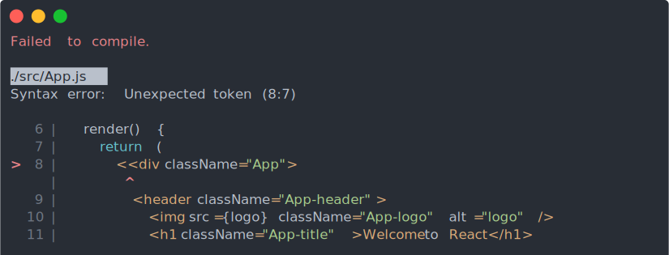

Создание React приложения (NPX, NPM, YARN)
Create React App
Пример Create React App - это лучший способ начать разработку нового одностраничного приложения React. Он настраивает вашу среду разработки, чтобы вы могли использовать новейшие функции JavaScript, предоставляет хороший опыт разработки и оптимизирует ваше приложение для продакшен. Вам понадобится Node >= 6 на вашем компьютере.
Создавайте приложения React без конфигурации сборки. Приложение Create React работает на MacOS, Windows и Linux. Если что-то не работает или есть вопросы и нужна помощь, обращайтесь в сообщество Spectrum по адресу — spectrum.chat/create-react-app.
Краткий обзор
Если вы ранее устанавливали create-Reaction-app глобально с помощью npm install -g create-Reaction-app, мы рекомендуем вам удалить пакет с помощью npm uninstall -g create-Reaction-app, чтобы npx всегда использовал последнюю версию.
npx create-react-app my-app
cd my-app
npm start
Затем откройте http://localhost:3000/, чтобы увидеть ваше приложение. Когда вы будете готовы к развертыванию в рабочей среде, создайте минимизированный пакет с помощью npm run build.

Вам не нужно устанавливать или настраивать такие инструменты, как веб-пакет или Babel. Они предварительно настроены и скрыты, так что вы можете сосредоточиться только на коде.
Создание приложения
Вам понадобится Node 8.16.0 или Node 10.16.0 или более поздняя версия на локальном компьютере. Вы можете использовать nvm(macOS / Linux) или nvm-windows для переключения версий Node между различными проектами.
Инструкция как установить Node.js на ваше стройство
Чтобы создать новое приложение, вы можете выбрать один из следующих методов:
NPX
npx create-react-app my-app
(npx — это инструмент для запуска пакетов, который поставляется с npm 5.2+ и выше)
npm
npm init react-app my-app
npm init initializer доступно в нпм 6+
Yarn
yarn create react-app my-app
Он создаст каталог с именем my-app внутри текущей папки. Внутри этого каталога он сгенерирует исходную структуру проекта и установит переходные зависимости:
Нет конфигурации или сложной структуры папок, только файлы, необходимые для создания приложения. После завершения установки вы можете открыть папку вашего проекта:
cd my-app
Внутри недавно созданного проекта вы можете запустить несколько встроенных команд:
npm start или yarn start
Запускает приложение в режиме разработки. Откройте http: // localhost: 3000, чтобы просмотреть его в браузере.
Страница автоматически перезагрузится, если вы внесете изменения в код. Вы увидите ошибки сборки и предупреждения lint в консоли.
npm test или yarn test
Запускает тестовый наблюдатель в интерактивном режиме. По умолчанию запускаются тесты, связанные с файлами, измененными с момента последней фиксации.
npm run build или yarn build
Создает приложение для производства в папке сборки. Он корректно объединяет React в производственном режиме и оптимизирует сборку для лучшей производительности.
Сборка сводится к минимуму, а имена файлов содержат хэши. Ваше приложение готово к развертыванию.
Что входит в Create React App?
В вашей среде будет все необходимое для создания современного одностраничного приложения React:
- Поддержка синтаксиса React, JSX, ES6, TypeScript и Flow.
- Языковые дополнения за пределами ES6, такие как оператор распространения объектов.
- CSS с автопрефиксом, поэтому вам не нужны -webkit- или другие префиксы.
- Быстрый интерактивный тестовый модуль со встроенной поддержкой отчетов о покрытии.
- Живой сервер разработки, который предупреждает об общих ошибках.
- Сценарий сборки для объединения JS, CSS и изображений для производства с хешами и исходными картами.
- Работник сервиса, работающий в автономном режиме, и манифест веб-приложения, удовлетворяющий всем критериям Progressive Web App(Примечание: использование работника сервиса является обязательным по адресу response-scripts@2.0.0 и выше)
- Беспроблемные обновления для вышеперечисленных инструментов с одной зависимостью.